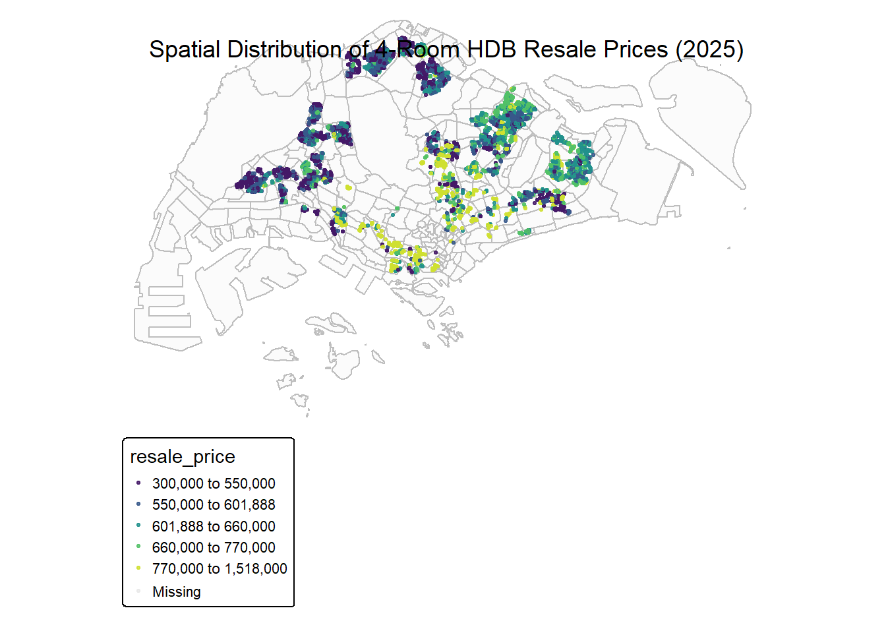
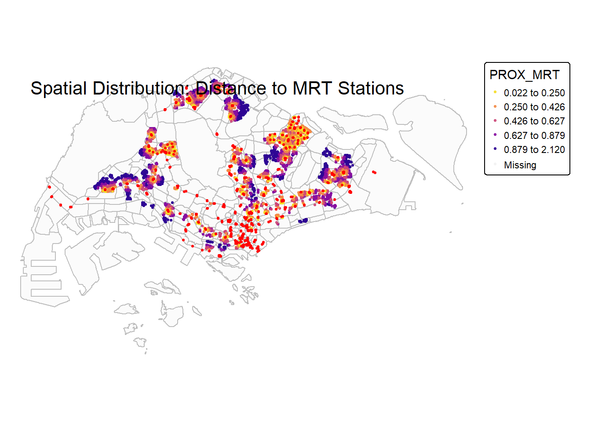
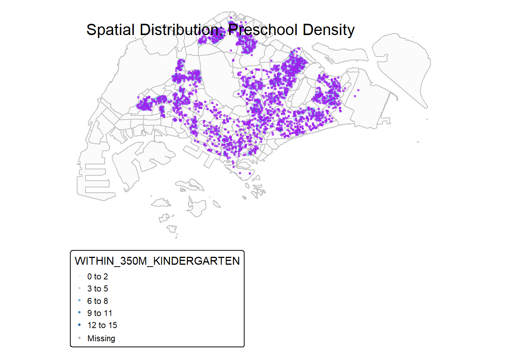
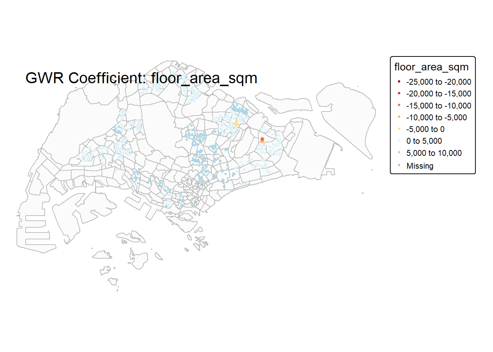
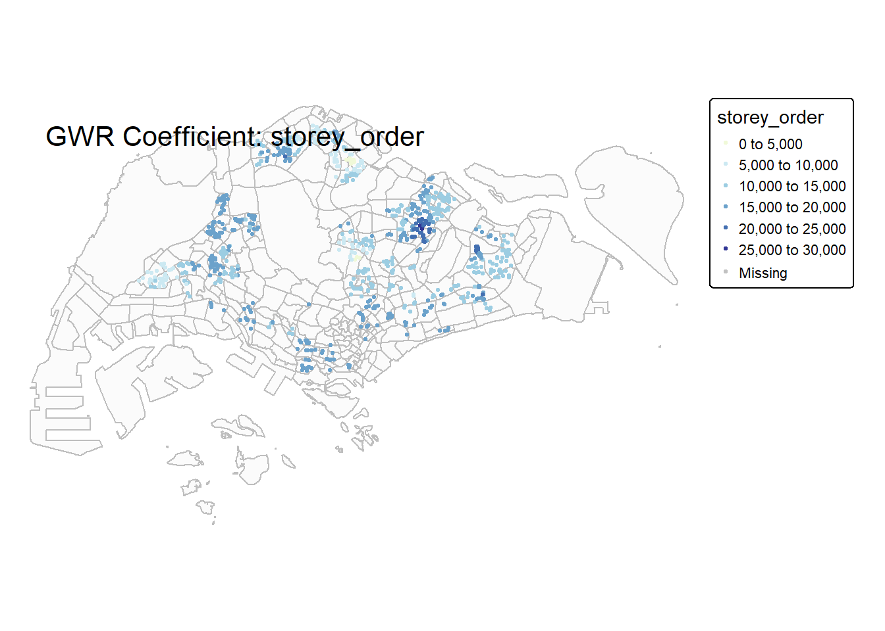
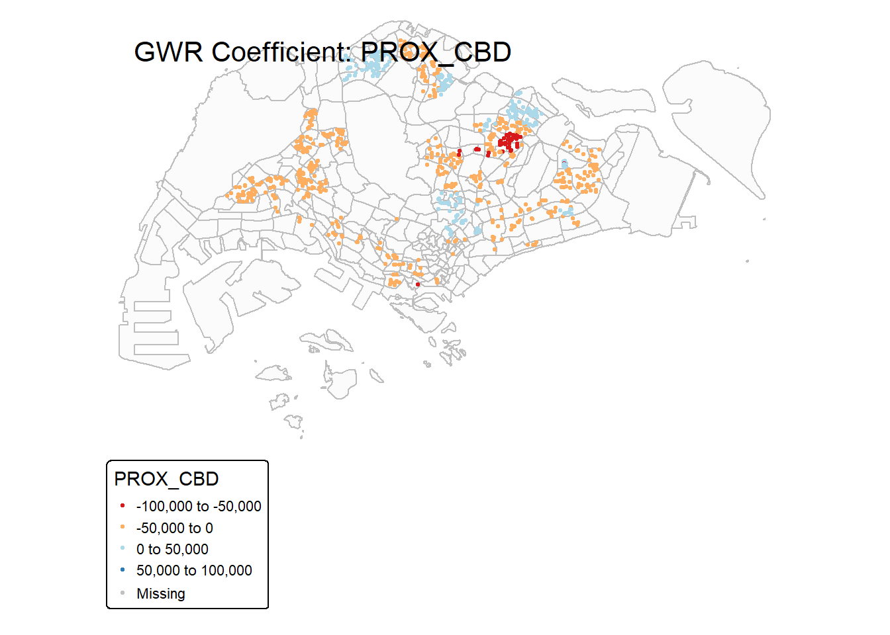
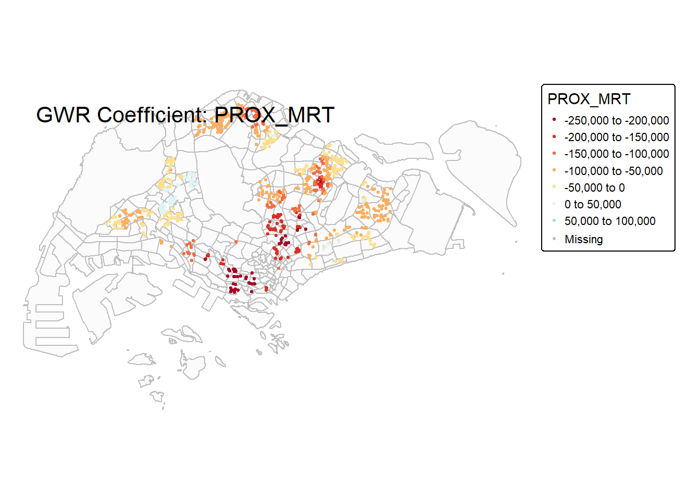
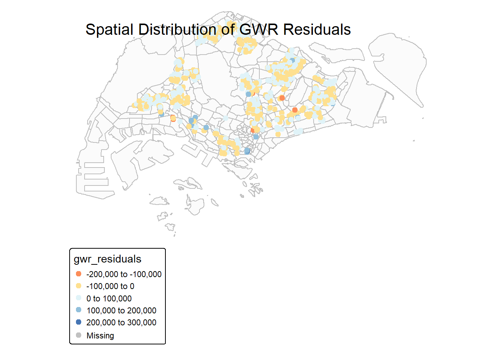

pacman::p_load(httr, tidyverse, sf, tmap, jsonlite, progress, rsample, GWmodel)Take-home Exercise 3
1. Overview
1.1 Background
1.2 Objectives
2. Data Wrangling
2.1 Loading Packages
2.2 The Data
2.3 Importing HDB data
HDBresale_raw <- read_csv("data/rawdata/HDBresale.csv")HDBresale <- HDBresale_raw %>%
filter(flat_type == "4 ROOM") %>%
filter(month >= "2025-01" & month < "2025-10")
head(HDBresale)2.4 Geocoding
2.4.1 Preprocess street name
HDBresale <- HDBresale %>%
mutate(street_name = gsub("ST\\.", "SAINT", street_name))2.4.2 Define the geocode function
geocode <- function(block, streetname) {
base_url <- "https://onemap.gov.sg/api/common/elastic/search"
address <- paste(block, streetname, sep = "")
query <- list(
"searchVal" = address,
"returnGeom" = "Y",
"getAddrDetails" = "N",
"pageNum" = "1"
)
res <- GET(base_url, query = query)
restext <- content(res, as = "text")
json <- fromJSON(restext)
if(length(json$results) == 0){
return(data.frame(LATITUDE = NA, LONGITUDE = NA))
}
output <- as.data.frame(json$results) %>%
select(LATITUDE, LONGITUDE)
return(output[1, ])
}2.4.3 Data geocoding
HDBresale$LATITUDE <- NA
HDBresale$LONGITUDE <- NA
for(i in 1:nrow(HDBresale)){
temp_output <- tryCatch({
geocode(HDBresale[i,"block"], HDBresale[i,"street_name"])
}, error = function(e){
data.frame(LATITUDE = NA, LONGITUDE = NA)
})
HDBresale$LATITUDE[i] <- temp_output$LATITUDE
HDBresale$LONGITUDE[i] <- temp_output$LONGITUDE
}write_rds(HDBresale, "data/rds/HDB.rds")HDB <- readRDS("data/rds/HDB.rds")2.4.4 Convert SF data
HDBresale_sf <- HDB %>%
st_as_sf(
coords = c("LONGITUDE", "LATITUDE"),
crs = 4326) %>%
st_transform(crs = 3414)2.5 Load other geospatial data
mpsz <- st_read("data/rawdata/MasterPlan2019SubzoneBoundaryNoSeaKML.kml") %>%
st_zm(drop = TRUE, what = "ZM") %>% st_transform(crs = 3414)Reading layer `URA_MP19_SUBZONE_NO_SEA_PL' from data source
`D:\XieHaoyang3537\ISSS626-GAA-XieHaoyang\Take-home_Ex\Take-home_ex3\data\rawdata\MasterPlan2019SubzoneBoundaryNoSeaKML.kml'
using driver `KML'
Simple feature collection with 332 features and 2 fields
Geometry type: MULTIPOLYGON
Dimension: XY
Bounding box: xmin: 103.6057 ymin: 1.158699 xmax: 104.0885 ymax: 1.470775
Geodetic CRS: WGS 84preschool = st_read("data/rawdata/PreschoolsLocation.kml") %>%
st_transform(crs = 3414)Reading layer `PRESCHOOLS_LOCATION' from data source
`D:\XieHaoyang3537\ISSS626-GAA-XieHaoyang\Take-home_Ex\Take-home_ex3\data\rawdata\PreSchoolsLocation.kml'
using driver `KML'
Simple feature collection with 2290 features and 2 fields
Geometry type: POINT
Dimension: XYZ
Bounding box: xmin: 103.6878 ymin: 1.247759 xmax: 103.9897 ymax: 1.462134
z_range: zmin: 0 zmax: 0
Geodetic CRS: WGS 84mrt <- st_read("data/rawdata/LTAMRTStationExitKML.kml") %>%
st_transform(crs = 3414)Reading layer `MRT_EXITS' from data source
`D:\XieHaoyang3537\ISSS626-GAA-XieHaoyang\Take-home_Ex\Take-home_ex3\data\rawdata\LTAMRTStationExitKML.kml'
using driver `KML'
Simple feature collection with 563 features and 2 fields
Geometry type: POINT
Dimension: XYZ
Bounding box: xmin: 103.6368 ymin: 1.264972 xmax: 103.9893 ymax: 1.449157
z_range: zmin: 0 zmax: 0
Geodetic CRS: WGS 842.6 Distance calculation
# Calculate the distance from each HDB unit to the nearest MRT station.
nearest_mrt <- st_nearest_feature(HDBresale_sf, mrt)
HDBresale_sf$PROX_MRT <- st_distance(HDBresale_sf, mrt[nearest_mrt, ], by_element = TRUE)
# Convert to kilometers
HDBresale_sf$PROX_MRT <- as.numeric(HDBresale_sf$PROX_MRT) / 1000
# Calculate the number of preschools within 350 meters of each HDB unit.
within_350m_preschool <- st_is_within_distance(HDBresale_sf, preschool, dist = 350)
HDBresale_sf$WITHIN_350M_KINDERGARTEN <- map_int(within_350m_preschool, length)
head(HDBresale_sf %>% select(PROX_MRT, WITHIN_350M_KINDERGARTEN))Simple feature collection with 6 features and 2 fields
Geometry type: POINT
Dimension: XY
Bounding box: xmin: 28566.05 ymin: 38360.76 xmax: 30036.29 ymax: 38861.93
Projected CRS: SVY21 / Singapore TM
# A tibble: 6 × 3
PROX_MRT WITHIN_350M_KINDERGARTEN geometry
<dbl> <int> <POINT [m]>
1 0.718 3 (30036.29 38360.76)
2 0.731 6 (29283.45 38517.37)
3 0.718 3 (30036.29 38360.76)
4 0.384 7 (28566.05 38861.93)
5 0.731 6 (29283.45 38517.37)
6 0.384 7 (28566.05 38861.93)3. Exploratory analysis
3.1 Spatial distribution of HDB resale prices
tmap_mode("plot")
tm_shape(mpsz) +
tm_polygons(alpha = 0.1,
border.col = "grey") +
tm_shape(HDBresale_sf) +
tm_dots(col = "resale_price",
palette = "viridis",
style = "quantile",
n = 5,
size = 0.2,
alpha = 0.8,
title = "HDB Resale Price (SGD)") +
tm_layout(title = "Spatial Distribution of 4-Room HDB Resale Prices (2025)",
frame = FALSE) 
3.2 Spatial pattern visualizing distance to MRT
tm_shape(mpsz) +
tm_polygons(alpha = 0.1,
border.col = "grey") +
tm_shape(HDBresale_sf) +
tm_dots(col = "PROX_MRT",
palette = "-plasma",
style = "quantile",
n = 5,
size = 0.2,
alpha = 0.8,
title = "Distance to Nearest MRT (km)") +
tm_shape(mrt) +
tm_dots(col = "red",
size = 0.2,
alpha = 0.8,
title = "MRT Station") +
tm_layout(title = "Spatial Distribution: Distance to MRT Stations",
frame = FALSE)
3.3 Spatial pattern of preschool density visualization
tm_shape(mpsz) +
tm_polygons(alpha = 0.1,
border.col = "grey") +
tm_shape(HDBresale_sf) +
tm_dots(col = "WITHIN_350M_KINDERGARTEN",
palette = "Blues",
style = "fixed",
breaks = c(0, 3, 6, 9, 12, 15),
size = 0.2,
alpha = 0.8,
title = "Number of Preschools within 350m") +
tm_shape(preschool) +
tm_dots(col = "purple",
size = 0.2,
alpha = 0.6,
title = "Preschool") +
tm_layout(title = "Spatial Distribution: Preschool Density",
frame = FALSE)
4. Modeling
4.1 Building a modeling dataset
4.1.1 Structural Factors
HDBresale_sf <- HDBresale_sf %>%
mutate(
remaining_lease_mths = ifelse(
"remaining_lease" %in% names(.),
as.numeric(remaining_lease) * 12,
(99 - (2025 - as.numeric(substr(lease_commence_date, 1, 4)))) * 12
),
storey_order = case_when(
storey_range == "01 TO 03" ~ 1,
storey_range == "04 TO 06" ~ 2,
storey_range == "07 TO 09" ~ 3,
storey_range == "10 TO 12" ~ 4,
storey_range == "13 TO 15" ~ 5,
storey_range == "16 TO 18" ~ 6,
storey_range == "19 TO 21" ~ 7,
storey_range == "22 TO 24" ~ 8,
storey_range == "25 TO 27" ~ 9,
storey_range == "28 TO 30" ~ 10,
storey_range == "31 TO 33" ~ 11,
storey_range == "34 TO 36" ~ 12,
storey_range == "37 TO 39" ~ 13,
storey_range == "40 TO 42" ~ 14,
TRUE ~ 7
)
)4.1.2 Location Factors
# Calculate the distance to the CBD (assuming the CBD is near Raffles Place).
cbd_point <- data.frame(lon = 103.851959, lat = 1.284053) %>%
st_as_sf(coords = c("lon", "lat"), crs = 4326) %>%
st_transform(crs = 3414)
HDBresale_sf$PROX_CBD <- st_distance(HDBresale_sf, cbd_point) %>%
as.numeric() / 1000 within_1km_pri <- st_is_within_distance(HDBresale_sf, preschool, dist = 1000)
HDBresale_sf$WITHIN_1KM_PRISCH <- map_int(within_1km_pri, length)4.1.3 Data quality check
# Check for missing values
cat("=== Data integrity check ===\n")=== Data integrity check ===cat("Total number of records:", nrow(HDBresale_sf), "\n\n")Total number of records: 8679 cat("Missing value statistics:\n")Missing value statistics:missing_summary <- sapply(HDBresale_sf %>% st_drop_geometry(), function(x) sum(is.na(x)))
print(missing_summary[missing_summary > 0]) remaining_lease_mths
8679 # Examine summary statistics of key variables
cat("\n=== Summary statistics of key variables ===\n")
=== Summary statistics of key variables ===HDBresale_sf %>%
st_drop_geometry() %>%
select(resale_price, floor_area_sqm, remaining_lease_mths, storey_order,
PROX_MRT, PROX_CBD, WITHIN_350M_KINDERGARTEN, WITHIN_1KM_PRISCH) %>%
summary() resale_price floor_area_sqm remaining_lease_mths storey_order
Min. : 300000 Min. : 74.00 Min. : NA Min. : 1.000
1st Qu.: 562000 1st Qu.: 92.00 1st Qu.: NA 1st Qu.: 2.000
Median : 630000 Median : 93.00 Median : NA Median : 3.000
Mean : 672451 Mean : 94.89 Mean :NaN Mean : 3.425
3rd Qu.: 728000 3rd Qu.:100.00 3rd Qu.: NA 3rd Qu.: 4.000
Max. :1518000 Max. :135.00 Max. : NA Max. :14.000
NA's :8679
PROX_MRT PROX_CBD WITHIN_350M_KINDERGARTEN WITHIN_1KM_PRISCH
Min. :0.02179 Min. : 0.9654 Min. : 0.000 Min. : 8.00
1st Qu.:0.28918 1st Qu.:10.2195 1st Qu.: 3.000 1st Qu.:24.00
Median :0.52230 Median :13.4618 Median : 5.000 Median :32.00
Mean :0.59218 Mean :12.6914 Mean : 5.457 Mean :32.82
3rd Qu.:0.80317 3rd Qu.:15.7532 3rd Qu.: 7.000 3rd Qu.:40.00
Max. :2.12010 Max. :19.8701 Max. :22.000 Max. :78.00
The data has no missing values, making it suitable for modeling. However, we noticed that the remaining lease term value was not identified, so further processing is needed.
# Convert "XX years YY months" to month values.
HDBresale_sf <- HDBresale_sf %>%
mutate(
# Extract year numbers
lease_years = as.numeric(str_extract(remaining_lease, "\\d+(?=\\s*years)")),
# Extract month numbers
lease_months = as.numeric(str_extract(remaining_lease, "\\d+(?=\\s*months)")) %>% replace_na(0),
# Calculate the total number of months
remaining_lease_mths = lease_years * 12 + lease_months
) %>%
# Remove temporary variables
select(-lease_years, -lease_months)
# Verify conversion results
cat("\nTransformed remaining_lease_mths summary:\n")
Transformed remaining_lease_mths summary:summary(HDBresale_sf$remaining_lease_mths) Min. 1st Qu. Median Mean 3rd Qu. Max.
485.0 750.0 910.0 916.1 1080.0 1144.0 # Recheck missing values
cat("\n=== Final missing value check ===\n")
=== Final missing value check ===sapply(HDBresale_sf %>% st_drop_geometry(), function(x) sum(is.na(x))) month town flat_type
0 0 0
block street_name storey_range
0 0 0
floor_area_sqm flat_model lease_commence_date
0 0 0
remaining_lease resale_price PROX_MRT
0 0 0
WITHIN_350M_KINDERGARTEN remaining_lease_mths storey_order
0 0 0
PROX_CBD WITHIN_1KM_PRISCH
0 0 4.2 Data sampling and segmentation
set.seed(1234)
if(nrow(HDBresale_sf) > 1500) {
HDB_sample <- HDBresale_sf %>%
sample_n(1500)
} else {
HDB_sample <- HDBresale_sf
}
cat("Data volume after sampling:", nrow(HDB_sample), "records\n")Data volume after sampling: 1500 records# Check for overlapping points in the sampled data.
overlapping_points <- HDB_sample %>%
mutate(overlap = lengths(st_equals(., .)) > 1)
cat("Number of overlapping points:", sum(overlapping_points$overlap), "\n")Number of overlapping points: 448 # Split the training set and the test set
set.seed(1234)
resale_split <- initial_split(HDB_sample, prop = 0.67)
train_data <- training(resale_split)
test_data <- testing(resale_split)
cat("Training set data volume:", nrow(train_data), "records\n")Training set data volume: 1005 recordscat("Test set data size:", nrow(test_data), "records\n")Test set data size: 495 records4.2.1 Handling overlapping points
# Add random offsets to overlapping points
set.seed(1234)
train_data <- train_data %>%
group_by(geometry) %>%
mutate(
n_duplicates = n(),
geometry = ifelse(n_duplicates > 1,
geometry + runif(2, -1, 1),
geometry)
) %>%
ungroup() %>%
st_sf()
cat("After handling overlapping points, the number of unique locations in the training set:", nrow(unique(train_data)), "\n")After handling overlapping points, the number of unique locations in the training set: 1005 4.3 OLS model
# Calibrate OLS model
price_mlr <- lm(resale_price ~ floor_area_sqm +
storey_order + remaining_lease_mths +
PROX_CBD + PROX_MRT +
WITHIN_350M_KINDERGARTEN + WITHIN_1KM_PRISCH,
data = train_data)
# Display OLS results
cat("=== OLS model results ===\n")=== OLS model results ===summary(price_mlr)
Call:
lm(formula = resale_price ~ floor_area_sqm + storey_order + remaining_lease_mths +
PROX_CBD + PROX_MRT + WITHIN_350M_KINDERGARTEN + WITHIN_1KM_PRISCH,
data = train_data)
Residuals:
Min 1Q Median 3Q Max
-242577 -49963 154 42815 354288
Coefficients:
Estimate Std. Error t value Pr(>|t|)
(Intercept) 24646.71 40235.13 0.613 0.54030
floor_area_sqm 5182.27 360.87 14.361 < 2e-16 ***
storey_order 19022.17 1224.29 15.537 < 2e-16 ***
remaining_lease_mths 474.01 15.36 30.856 < 2e-16 ***
PROX_CBD -23009.30 584.91 -39.338 < 2e-16 ***
PROX_MRT -47630.11 6561.98 -7.258 7.87e-13 ***
WITHIN_350M_KINDERGARTEN -59.62 929.41 -0.064 0.94887
WITHIN_1KM_PRISCH -715.75 228.54 -3.132 0.00179 **
---
Signif. codes: 0 '***' 0.001 '**' 0.01 '*' 0.05 '.' 0.1 ' ' 1
Residual standard error: 74180 on 997 degrees of freedom
Multiple R-squared: 0.7863, Adjusted R-squared: 0.7848
F-statistic: 524.1 on 7 and 997 DF, p-value: < 2.2e-16# Check the model fit
cat("\n=== Model fit ===\n")
=== Model fit ===cat("R-squared:", summary(price_mlr)$r.squared, "\n")R-squared: 0.7862978 cat("Adjusted R-squared:", summary(price_mlr)$adj.r.squared, "\n")Adjusted R-squared: 0.7847974 4.4 GWR model
4.4.1 Calibrate GWR model
# Convert the sf object to a SpatialPointsDataFrame
train_data_sp <- as(train_data, "Spatial")
# Calculate the optimal bandwidth for GWR
cat("Start calculating GWR bandwidth\n")Start calculating GWR bandwidthbw_adaptive <- bw.gwr(
resale_price ~ floor_area_sqm +
storey_order + remaining_lease_mths +
PROX_CBD + PROX_MRT +
WITHIN_1KM_PRISCH,
data = train_data_sp,
approach = "CV",
kernel = "gaussian",
adaptive = TRUE,
longlat = FALSE
)Adaptive bandwidth: 628 CV score: 5.258177e+12
Adaptive bandwidth: 396 CV score: 5.021551e+12
Adaptive bandwidth: 251 CV score: 4.628863e+12
Adaptive bandwidth: 163 CV score: 4.029827e+12
Adaptive bandwidth: 107 CV score: 3.407598e+12
Adaptive bandwidth: 74 CV score: 2.918172e+12
Adaptive bandwidth: 52 CV score: 2.613528e+12
Adaptive bandwidth: 40 CV score: 2.448377e+12
Adaptive bandwidth: 31 CV score: 2.33265e+12
Adaptive bandwidth: 27 CV score: 2.278727e+12
Adaptive bandwidth: 22 CV score: 2.217772e+12
Adaptive bandwidth: 22 CV score: 2.217772e+12 cat("Optimal bandwidth (number of neighboring points):", bw_adaptive, "\n")Optimal bandwidth (number of neighboring points): 22 # Save bandwidth results
write_rds(bw_adaptive, "data/bw_adaptive.rds")4.4.2 Running the GWR model
gwr_adaptive <- gwr.basic(
resale_price ~ floor_area_sqm +
storey_order + remaining_lease_mths +
PROX_CBD + PROX_MRT +
WITHIN_1KM_PRISCH,
data = train_data_sp,
bw = bw_adaptive,
kernel = "gaussian",
adaptive = TRUE,
longlat = FALSE
)
cat("=== GWR model results ===\n")=== GWR model results ===print(gwr_adaptive) ***********************************************************************
* Package GWmodel *
***********************************************************************
Program starts at: 2025-11-15 14:22:53.505236
Call:
gwr.basic(formula = resale_price ~ floor_area_sqm + storey_order +
remaining_lease_mths + PROX_CBD + PROX_MRT + WITHIN_1KM_PRISCH,
data = train_data_sp, bw = bw_adaptive, kernel = "gaussian",
adaptive = TRUE, longlat = FALSE)
Dependent (y) variable: resale_price
Independent variables: floor_area_sqm storey_order remaining_lease_mths PROX_CBD PROX_MRT WITHIN_1KM_PRISCH
Number of data points: 1005
***********************************************************************
* Results of Global Regression *
***********************************************************************
Call:
lm(formula = formula, data = data)
Residuals:
Min 1Q Median 3Q Max
-242451 -49849 197 42861 354127
Coefficients:
Estimate Std. Error t value Pr(>|t|)
(Intercept) 24534.05 40176.73 0.611 0.541568
floor_area_sqm 5182.21 360.68 14.368 < 2e-16 ***
storey_order 19017.54 1221.55 15.568 < 2e-16 ***
remaining_lease_mths 474.03 15.35 30.877 < 2e-16 ***
PROX_CBD -23011.18 583.89 -39.410 < 2e-16 ***
PROX_MRT -47604.04 6546.12 -7.272 7.14e-13 ***
WITHIN_1KM_PRISCH -721.84 207.79 -3.474 0.000535 ***
---Significance stars
Signif. codes: 0 '***' 0.001 '**' 0.01 '*' 0.05 '.' 0.1 ' ' 1
Residual standard error: 74140 on 998 degrees of freedom
Multiple R-squared: 0.7863
Adjusted R-squared: 0.785
F-statistic: 612 on 6 and 998 DF, p-value: < 2.2e-16
***Extra Diagnostic information
Residual sum of squares: 5.485708e+12
Sigma(hat): 73954.72
AIC: 25400.59
AICc: 25400.74
BIC: 24490.2
***********************************************************************
* Results of Geographically Weighted Regression *
***********************************************************************
*********************Model calibration information*********************
Kernel function: gaussian
Adaptive bandwidth: 22 (number of nearest neighbours)
Regression points: the same locations as observations are used.
Distance metric: Euclidean distance metric is used.
****************Summary of GWR coefficient estimates:******************
Min. 1st Qu. Median 3rd Qu.
Intercept -1001854.39 -247033.74 -12432.99 262325.42
floor_area_sqm -21414.49 2824.70 3684.24 5393.53
storey_order 2551.56 11819.33 14694.92 16800.27
remaining_lease_mths -175.05 324.74 398.96 629.68
PROX_CBD -90067.77 -28463.29 -13335.67 2225.05
PROX_MRT -245828.78 -113371.63 -72552.86 -33329.68
WITHIN_1KM_PRISCH -3950.85 -826.83 238.34 857.50
Max.
Intercept 3666305.09
floor_area_sqm 9329.08
storey_order 25182.80
remaining_lease_mths 862.86
PROX_CBD 65549.40
PROX_MRT 58099.04
WITHIN_1KM_PRISCH 2408.74
************************Diagnostic information*************************
Number of data points: 1005
Effective number of parameters (2trace(S) - trace(S'S)): 198.1133
Effective degrees of freedom (n-2trace(S) + trace(S'S)): 806.8867
AICc (GWR book, Fotheringham, et al. 2002, p. 61, eq 2.33): 24520.55
AIC (GWR book, Fotheringham, et al. 2002,GWR p. 96, eq. 4.22): 24308.8
BIC (GWR book, Fotheringham, et al. 2002,GWR p. 61, eq. 2.34): 24210.39
Residual sum of squares: 1.614678e+12
R-square value: 0.9370981
Adjusted R-square value: 0.9216347
***********************************************************************
Program stops at: 2025-11-15 14:22:54.111359 # Comparing the performance of OLS and GWR
cat("\n=== Model Comparison ===\n")
=== Model Comparison ===cat("OLS R-squared:", round(summary(price_mlr)$r.squared, 4), "\n")OLS R-squared: 0.7863 cat("GWR R-squared:", round(gwr_adaptive$GW.diagnostic$gw.R2, 4), "\n")GWR R-squared: 0.9371 cat("GWR Adjusted R-squared:", round(gwr_adaptive$GW.diagnostic$gwR2.adj, 4), "\n")GWR Adjusted R-squared: 0.9216 cat("GWR RSS:", round(gwr_adaptive$GW.diagnostic$RSS, 2), "\n")GWR RSS: 1.614678e+12 cat("OLS RSS:", round(sum(price_mlr$residuals^2), 2), "\n")OLS RSS: 5.485686e+12 # Add the GWR results back to the training data.
train_data_with_gwr <- train_data %>%
mutate(
gwr_residuals = gwr_adaptive$SDF$residual,
gwr_fitted = gwr_adaptive$SDF$yhat
)
# Save GWR model results
write_rds(gwr_adaptive, "data/gwr_model.rds")
cat("The nGWR model has been saved to: data/gwr_model.rds\n")The nGWR model has been saved to: data/gwr_model.rds4.5 Visualization of modeling results
# Add the GWR coefficient to the spatial data.
gwr_results <- st_as_sf(gwr_adaptive$SDF) %>%
st_set_crs(3414)
# Visualize the coefficients of key variables.
coefficients_to_plot <- c("floor_area_sqm", "storey_order", "PROX_CBD", "PROX_MRT")## Spatial distribution map of GWR coefficient
tmap_mode("plot")
for(coef in coefficients_to_plot) {
map_title <- paste("GWR Coefficient:", coef)
p <- tm_shape(mpsz) +
tm_polygons(alpha = 0.1, border.col = "grey") +
tm_shape(gwr_results) +
tm_dots(col = coef,
palette = "RdYlBu",
style = "pretty",
size = 0.2,
title = paste("Coefficient:", coef),
midpoint = 0) +
tm_layout(title = map_title,
frame = FALSE)
print(p)
}



4.6 Residual comparison
4.6.1 GWR residual space distribution
train_data_with_gwr <- train_data %>%
mutate(
gwr_residuals = gwr_adaptive$SDF$residual,
gwr_fitted = gwr_adaptive$SDF$yhat,
ols_residuals = price_mlr$residuals
)tm_shape(mpsz) +
tm_polygons(alpha = 0.1, border.col = "grey") +
tm_shape(train_data_with_gwr) +
tm_dots(col = "gwr_residuals",
palette = "RdYlBu",
style = "pretty",
size = 0.5,
title = "GWR Residuals (SGD)",
midpoint = 0) +
tm_layout(title = "Spatial Distribution of GWR Residuals",
frame = FALSE)
# Save the final analysis dataset
write_rds(train_data_with_gwr, "data/final_analysis_data.rds")
# Final Model Summary
cat("\n=== Final Model Performance Summary ===\n")
=== Final Model Performance Summary ===cat("OLS R-squared:", round(summary(price_mlr)$r.squared, 4), "\n")OLS R-squared: 0.7863 cat("GWR R-squared:", round(gwr_adaptive$GW.diagnostic$gw.R2, 4), "\n")GWR R-squared: 0.9371 cat("Performance improvement:", round((gwr_adaptive$GW.diagnostic$gw.R2 - summary(price_mlr)$r.squared) * 100, 1), "%\n")Performance improvement: 15.1 %cat("Number of valid parameters for GWR:", round(gwr_adaptive$GW.diagnostic$enp, 1), "\n")Number of valid parameters for GWR: 198.1